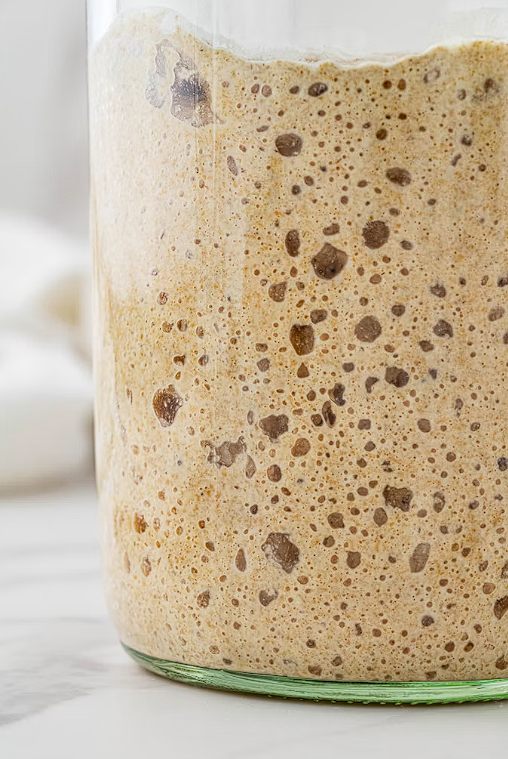

Descubre los secretos biológicos y el proceso para crear tu propio cultivo vivo en casa.
¿Por qué la masa madre no inflama?
Durante la fermentación lenta (de 12 a 24 horas), las bacterias lácticas (Lactobacillus) y las levaduras naturales descomponen las proteínas del trigo antes del horneado:
Acción de enzimas (Proteasas): La acidez activa enzimas naturales presentes en la harina llamadas proteasas.
Ruptura del gluten: Las enzimas cortan las cadenas complejas de gluten en aminoácidos y péptidos sencillos.
Resultado: El pan llega al estómago predigerido, evitando la pesadez o inflamación común del pan industrial.
¿Cómo hacer tu masa madre desde cero?
Solo necesitas harina integral o de centeno, agua potable sin cloro y 5 días de paciencia.

Nuestra masa madre activa: burbujeante, con aroma dulzón y lista para hornear.
Día 1 (Mezcla inicial): En un frasco de vidrio, mezcla 50 g de harina y 50 g de agua tibia. Tapa de forma suelta a temperatura ambiente (20-24 °C).
Día 2 (Reposo): Revuelve suavemente y vuelve a tapar. Es normal si no ves burbujas aún.
Día 3 (Primer refresco): Descarta la mitad. Añade 50 g de harina y 50 g de agua. Mezcla bien.
Días 4 y 5 (Alimentación constante): Repite el refresco del Día 3 a la misma hora hasta que duplique su volumen.
¿Cómo saber que tu masa madre está lista?
Estará activa cuando duplique o triplique su tamaño pocas horas después de alimentarla, muestre una red de burbujas y tenga un aroma fresco con notas ligeramente ácidas.